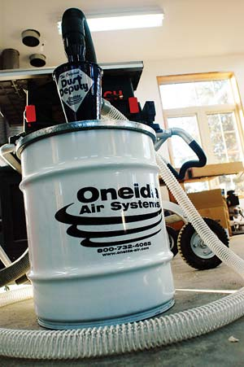

Winter Workshop Wonders
Cut down on time and dust in your workshop with these handy tools.
By Steve Maxwell
December 2007/January 2008
The first thing I built on my homestead was an outhouse. I made it from a pile of used lumber, and it took me almost as long to remove all the nails as it did to raise that first roof over my head. But that was 20 years ago, and things have changed. We now have the Reconnx Nail Kicker NR-101.
At first glance, the Nail Kicker looks like a compressor-driven finishing nailer. But in place of the usual magazine and nosepiece, it has a long, hollow tube. Place the tube over the point of a nail, then pull the trigger. A solid metal driver pounds the nail down backwards, often right out the other side of the board - much better than hammering old nails down, flipping the board over and using a crowbar to pull them out.
At $249 plus shipping, the NR-101 costs more than a comparable finishing nailer. But if you’ve got enough de-nailing to warrant a power tool (and already own a compressor), then the time saved by this machine is worth it. The manufacturer claims that it speeds the process by 400 percent. But when working with 2x lumber, I found that it wasn’t always powerful enough to completely eject the nail from the board. Still, you can expect the Nail Kicker to help you work at least twice as fast. Doubtful? Learn about the “Try-and-Buy” program at www.nailkicker.com; (303) 554-8557.
Though almost as annoying as nail-ridden lumber, airborne dust generated in the workshop or home is more than just a nuisance, it’s also a serious health hazard. That’s why a lot of folks buy shop vacs. But even good shop vacs fill quickly when cleaning up wood shavings and the internal filter clogs whenever you’re dealing with dust. A “cyclone” can help, and the Oneida Dust Deputy is one of the smallest, yet most effective models.
In the world of dust collection, a cyclone separates and stores dust particles before they overwhelm your shop vac. The storage capacity of the system gets a boost and the filter lasts much longer.
Cyclones have traditionally either been industrial-sized devices or plastic units that fit over a garbage can. The Dust Deputy is the first heavy-duty, compact model of its kind. It comes in two versions: the basic model ($129 - attaches to your own drum) or the deluxe model that includes a 10-gallon steel drum with quick-detach lid ($199). Connect your shop vac hose to the vertical outlet on the top of the cyclone, and the dust collection hose to the horizontal outlet on the side.
There are a few cheap alternatives out there, but none come close to the quality and effectiveness of this unit.
 STEVE MAXWELL The Reconnx Nail Kicker makes removing nails quick and easy. |
 STEVE MAXWELL The Oneida Dust Deputy contains sawdust, keeping it out of the air and your lungs. |
|